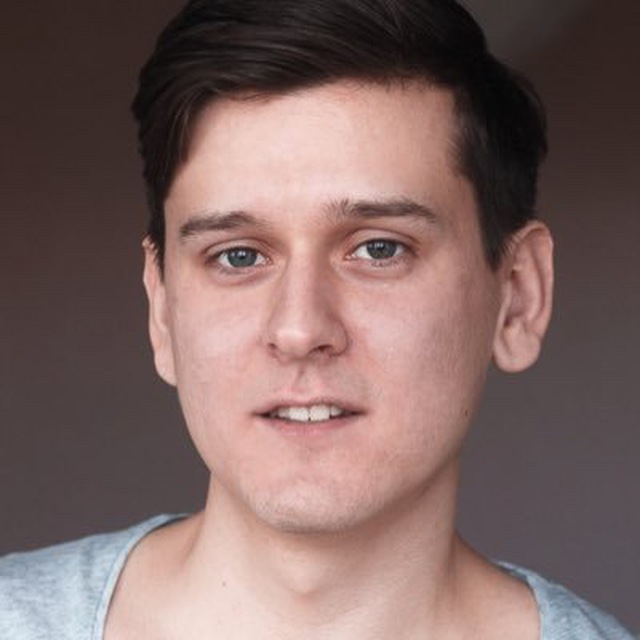

Роман Коробейников
Фронтенд-разработчик из Ижевска с опытом более 9 лет, много работал с дэшбордами, виджетами оплаты, дизайн-системами. Большой опыт в верстке — адаптивность, типографика, анимации, семантика. В свободное время делаю ремонт в доме мечты.
Навыки
- HTML, CSS (SASS, LESS)
- JavaScript, TypeScript
- AngularJS, Angular, React
- PHP
- Figma, Sketch, PS
- Gulp, Webpack, Git
Опыт работы
Piano
Фронтенд-разработчик, Ижевск – (Сентябрь 2014 — настоящее время)
- Разработал UI-kit, который применялся в разных командах: спроектировал основу с использованием SASS, сверстал компоненты, написал документацию
- Внедрил RTL (поддержку письменности справа налево) в проектов модуля оплаты, консультировал и обучал разработчиков в других проектах
- Работал на старте разработки дизайн-системы. Разрабатывал базовые компоненты.
- Перенес блог компании со сторонней системы на собственный Wordpress. Делал верстку по новому дизайну, внедрял в шаблоны Worpdress, работал над фронтендом на Angular, TS (загрузка постов через REST API), дорабатывал бэкенд на PHP.
- Разрабатывал новые разделы внутреннего проекта для документации: добавлял типы постов, загрузку через REST API, добавлял метаданные постам на бэкенде для гибкой фильтрации и сортировки на фронтенде (Wordpress, PHP, AngularJS, HTML/SASS).
- Разработка, поддержка корпоративного сайта: верстка, обработка форм на фронтенде и бэкенде, настройка аналитики (Angular, TS, SASS, PHP). Коммуникации с маркетинговой командой.
- Интеграции продукта в сайты заказчика. Поиск ошибок на фронтенде в интеграции модулей подписок и оплаты.
- Проект для генерации встраиваемой навигации на собственные сайты: верстка, разработка компонентов (React, TS)
- Проводил собеседования, менторил новых сотрудников
HTML Academy
Ментор, Москва (удаленно) – (Сентябрь 2016 — июль 2019)
Наставничество на интенсивах «Базовый HTML и CSS», «Продвинутый HTML и CSS». Около 20 студентам помог защитить итоговый проект на 100 баллов.
Amio
Верстальщик, Москва (удаленно) – (Апрель 2014 — сентябрь 2014)
HTML/CSS-верстка, написание JS (дропдауны, слайдеры, анимации, валидации форм) для интернет-магазинов, сайтов девелоперов
Nutnet
Верстальщик, Ижевск – (Август 2013 — апрель 2014)
HTML/CSS-верстка региональных корпоративных проектов. Внедрил использование препроцессора LESS.
Статьи
Вел канал в телеграме, писал про найденные ошибки на живых сайтах, как их исправить.
Образование
Ижевский государственный технический университет им. М.Т. Калашникова, факультет «Информатика и вычислительная техника»
Бакалавр информатики и вычислительной техники, специальность «Вычислительные машины, комплексы, системы и сети» Ижевск – (2009 — 2013)